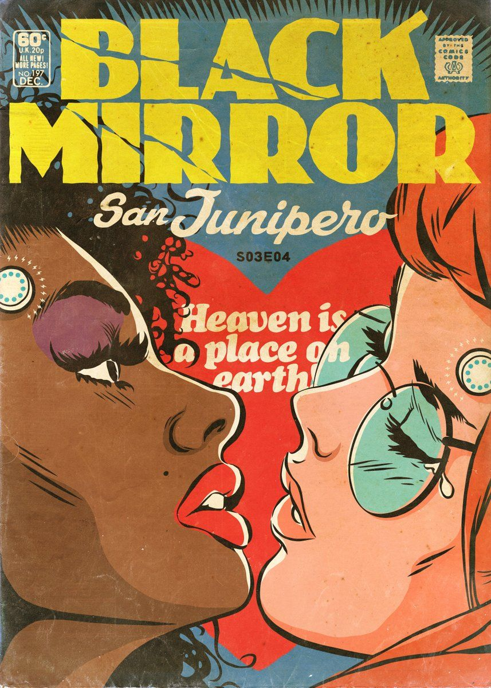

After 2.5+ years working in HR in factory offices in Japan, I realized how important it is to be actually engaged in your work. That's why I decided to pivot into the growing field of web development.
Lost in TranslationA lonely, aging movie star named Bob Harris (Bill Murray) and a conflicted newlywed, Charlotte (Scarlett Johansson), meet in Tokyo. Bob is there to film a Japanese whiskey commercial; Charlotte is accompanying her celebrity-photographer husband. Strangers in a foreign land, the two find escape, distraction and understanding amidst the bright Tokyo lights after a chance meeting in the quiet lull of the hotel bar. They form a bond that is as unlikely as it is heartfelt and meaningful. |
|
|  |
Black MirrorFeaturing stand-alone dramas -- sharp, suspenseful, satirical tales that explore techno-paranoia -- "Black Mirror" is a contemporary reworking of "The Twilight Zone" with stories that tap into the collective unease about the modern world. Each story features its own cast of unique characters, including stars like Bryce Dallas Howard ("The Help"), Alice Eve, Gugu Mbatha-Raw, Tom Cullen and Jerome Flynn ("Game of Thrones"). Joe Wright, Dan Trachtenberg, and James Watkins are among the featured directors. |
Avatar: The Last AirbenderThe world is divided into four nations -- the Water Tribe, the Earth Kingdom, the Fire Nation and and the Air Nomads -- each represented by a natural element for which the nation is named. Benders have the ability to control and manipulate the element from their nation. Only the Avatar is the master of all four elements. The ruthless Fire Nation wants to conquer the world but the only bender who has enough power, the Avatar, has disappeared ... until now. His tribe soon discovers that Aang is the long-lost Avatar. Now Katara and Sokka must safeguard Aang on his journey to master all four elements and save the world from the Fire Nation. |
This page tells you a little bit about Francis.
Find him on social media: